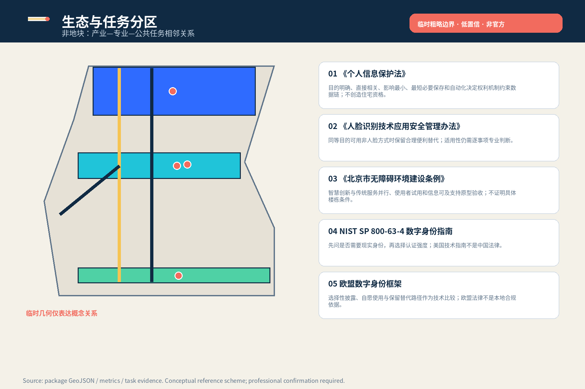
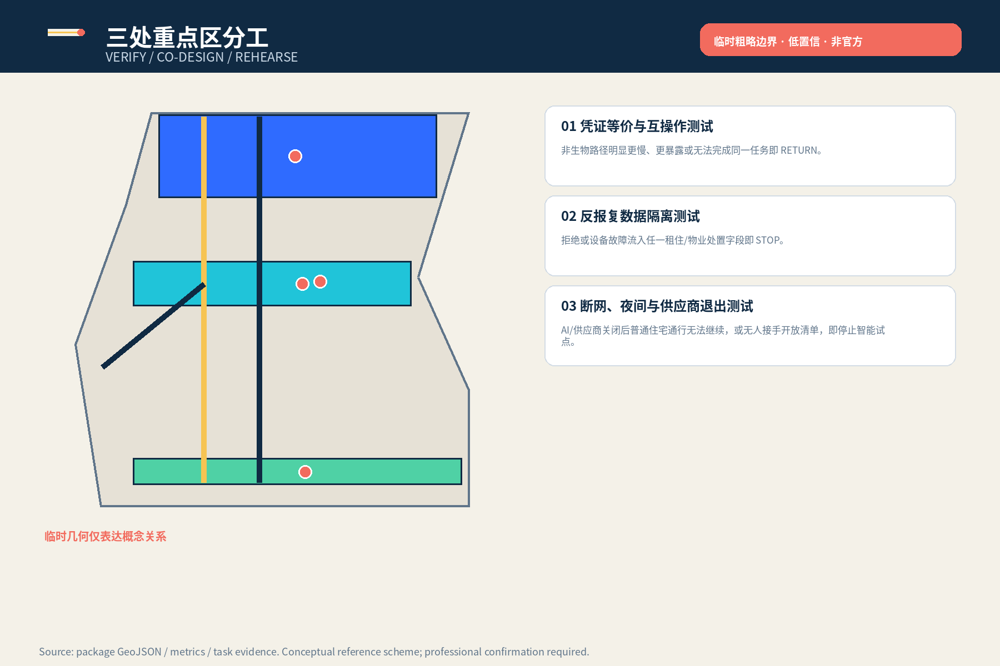
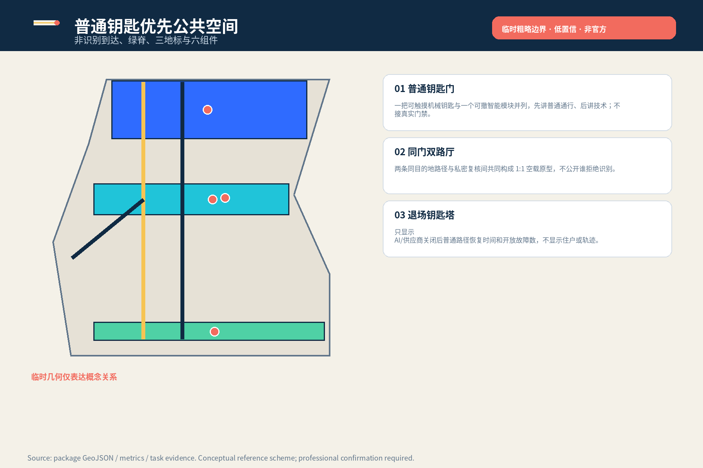
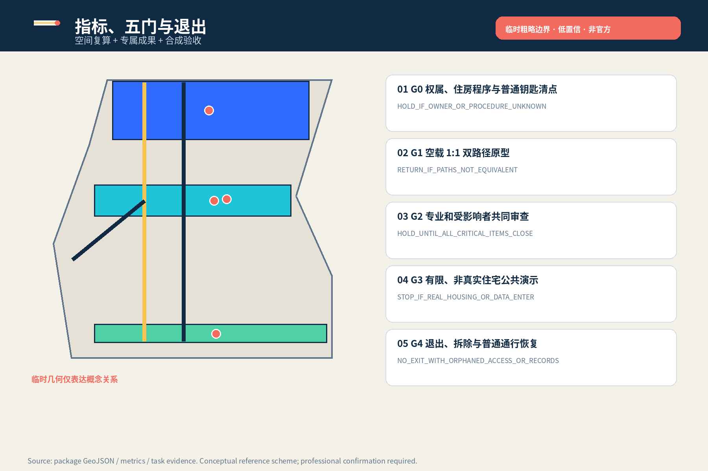

可视索引
总览地图 · 三层范围 · 重点区域 · 用地分区 · 交通慢行 · 蓝绿公共空间 · 建筑 · 更新项目 · AI 场景 · 核心指标 · 任务覆盖 · 自检状态 · 来源 · 假设
总体策略与指标
11412825.386site_area_sqm
0.128565green_ratio
0.075626public_space_ratio
5case_study_count
3industry_test_count
10scenario_card_count
6persona_count
3landmark_count
5implementation_gate_count



